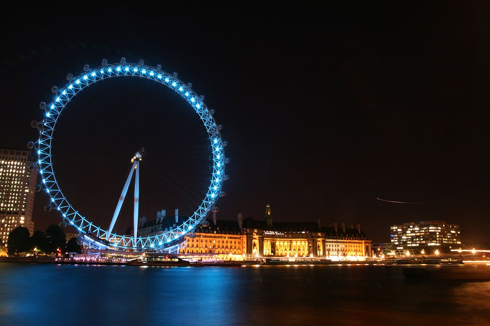

Londyn
miasto będące stolicą Wielkiej Brytanii i Anglii położone w jej południowo-wschodniej części.
Położony nad Tamizą, jest największym miastem Europy po Moskwie i Stambule, a większym od Paryża; jest także największym miastem Unii Europejskiej i jednym z większych miast świata zarówno w skali samego miasta, jak i aglomeracji.
Liczba mieszkańców Londynu (w granicach tzw. Wielkiego Londynu) wynosi ok. 8,4 mln (2013 r.) na obszarze 1572 km²; cała zaś aglomeracja londyńska, łącznie ze wszystkimi przyległymi miejscowościami liczy ok. 13 mln mieszkańców (obszar tzw. metropolia).
Około 20% mieszkańców pochodzi z Azji, Afryki i Karaibów.
Współczesny Londyn jest największym centrum finansowym świata (od 2006 przed Nowym Jorkiem). Tutaj dokonuje się 30% światowego obrotu walutami i 40% światowego obrotu Euroobligacjami.
W Londynie usytuowanych jest kilkaset banków, największa giełda w Europie (trzecia na świecie), liczne towarzystwa ubezpieczeniowe i inwestycyjne. Londyn jest także ogromnym ośrodkiem medialnym.
Jest to także jedno z najbardziej zanieczyszczonych miast Unii Europejskiej.
Miasto przyciąga rocznie ok. 30 mln turystów.
Kultura
Londyn zaliczany jest do największych na świecie ośrodków obrotu dziełami sztuki i pozostaje jednym z największych centrów muzealnych Europy.
Ponad 60 muzeów i stałych galerii przyciąga turystów z całego świata. Najbardziej znane z nich to:
- Muzeum Brytyjskie
- National Gallery
- Tate Gallery
- Muzeum Wiktorii i Alberta
- Muzeum Figur Woskowych Madame Tussaud
- Muzeum Historii Naturalnej
Godne podkreślenia jest Muzeum Brytyjskie (ang. British Museum – największy kompleks muzealny na świecie) z dużymi zbiorami starożytnej egipskiej, greckiej, rzymskiej, prekolumbijskiej, indyjskiej i Dalekiego Wschodu (m.in. chińskiej, japońskiej) oraz numizmatyki.
National Gallery posiada kolekcję malarstwa europejskiego od XIII do końca XIX wieku, natomiast Tate Gallery może pochwalić się bogatymi zbiorami sztuki angielskiej począwszy od XVI aż do XX wieku oraz współczesnej sztuki światowej, z dobudowaną Clore Gallery, w której ulokowana jest spuścizna malarza J.M.W. Turnera.
Na drugim brzegu Tamizy znajduje się galeria sztuki Tate Modern, gdzie obok stałych zbiorów są prezentowane wystawy czasowe sztuki najnowszej m.in. Wallace Collection czyli prywatna kolekcja ze zbiorami malarstwa europejskiego, rzeźby, broni i porcelany.
Muzeum Wiktorii i Alberta ma bogate zbiory rzeźby, ceramiki, mebli, wyrobów z metalu (kolekcja sreber), ubiorów oraz sztuki z Indii i Dalekiego Wschodu (m.in. chińskiej, japońskiej i koreańskiej), a także malarstwa angielskiego z lat 1700–1900.
Przy siedzibie masońskiej Zjednoczonej Wielkiej Loży Anglii działa bezpłatne muzeum masońskie i istnieje możliwości zwiedzenia części budynku z przewodnikiem.
Londyn jest wielkim ośrodkiem kulturalnym o światowym znaczeniu, swe siedziby mają tu m.in.:

- Opera Królewska Covent Garden i Angielska Opera Narodowa w London Coliseum
- 5 orkiestr symfonicznych w tym (London Symphony Orchestra, BBC Orchestra i London Philharmonic Orchestra)
- monumentalne sale koncertowe, w tym Royal Albert Hall
- ponad 40 teatrów, zgrupowanych głównie w okolicy West End
Londyn jest także kojarzony z ogromną liczbą historycznych parków, m.in. Hyde Park, St. James's Park, Kew Gardens, Green Park czy Regent's Park.